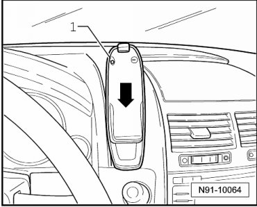
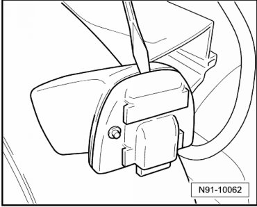
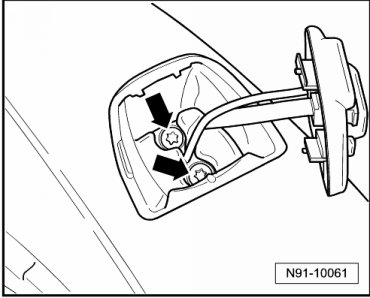
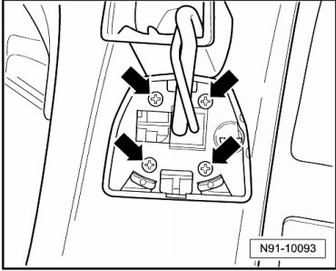
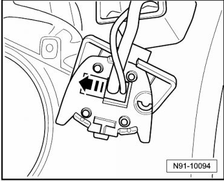

Mount Type 2
Telephone Mount
Removing
- Remove cell phone from base plate.
- Press knob - 1 -, hold down and slide cell phone mount downward in - direction of arrow - and out.

- Using a suitable screwdriver, remove contact plate on base mount by inserting screwdriver in slit on contact plate and turning it slightly.

- On vehicles with closed storage compartment in top center of instrument panel, remove storage compartment by removing both bolts from storage compartment insert and removing compartment.
- On vehicles with open storage compartment in top center of instrument panel, remove storage compartment.
- Remove both bolts - arrows - grasp behind instrument panel through opening and firmly hold counterhold.

• Never remove the two bolts from the base mount without securely holding the counterhold inside at the same time. Otherwise, it will fall behind the instrument panel.
- Remove counterhold rear side first from instrument panel opening and remove it from wiring harness.
- Remove the four screws - arrows - from contact plate.

- Slide wiring harness in contact plate in direction of arrow and remove.

• If telephone bracket with electrical wiring connections should be removed up to connection in instrument panel, continue assembly at "Telephone cradle with electrical wiring harness, installing", --> [ Telephone Cradle with Electrical Wiring Harness ] Telephone Cradle with Electrical Wiring Harness.
Installing
- When tightening telephone cradle on instrument panel, hold counterhold under instrument panel firmly with hand. To do this, the insert in the instrument panel center storage compartment must be removed, or, in the case of an open storage compartment, the compartment must be removed.
Before installing the storage compartment, ensure the wiring is routed correctly in the instrument panel to ensure clearance for the cover mechanics.
Remaining installation in reverse order of removal.